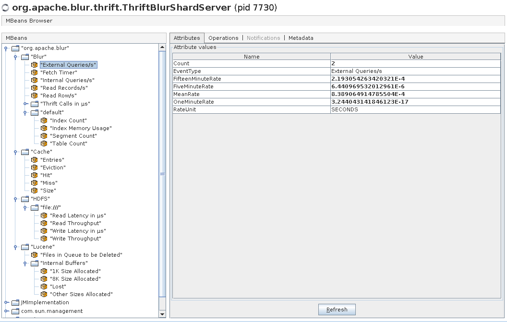

General Configuration
The basic cluster setup involves editing the blur-site.properties and the blur-env.sh files in the $BLUR_HOME/conf directory. It is recommended that a standalone ZooKeeper be setup. Also a modern version of Hadoop with append support is required for proper data management (the write ahead log requires the sync operation).
Caution
If you setup a standalone ZooKeeper you will need to configure Blur to NOT manage the ZooKeeper. You will need to edit blur-env.sh file:export BLUR_MANAGE_ZK=falseblur-site.properties
# The ZooKeeper connection string, consider adding a root path to the string, it
# can help when upgrading Blur.
# Example: zknode1:2181,zknode2:2181,zknode3:2181/blur-0.2.4
#
# NOTE: If you provide the root path "/blur-0.2.4", that will have to be manually
# created before Blur will start.
blur.zookeeper.connection=127.0.0.1
# If you are only going to run a single shard cluster then leave this as default.
blur.cluster.name=default
# Sets the default table location in hdfs. If left null or omitted the table uri property in
# the table descriptor will be required for all tables.
blur.cluster.default.table.uri=hdfs://namenode/blur/tables
Default Properties
| Property | Description |
Hadoop
The current version of Blur has Hadoop 1.2.1 embedded in the "apache-blur-*/lib/hadoop-1.2.1" path. However if you are using a different version of Hadoop or want Blur to use the Hadoop configuration in your installed version you will need to set the "HADOOP_HOME" environment variable in the "blur-env.sh" script found in "apache-blur-*/conf/".
# Edit the blur-env.sh
export HADOOP_HOME=<path to your Hadoop install directory>
Controller Server Configuration
blur-site.properties
These are the default settings for the shard server that can be overridden in the blur-site.properties file. Consider increasing the various thread pool counts (*.thread.count). The blur.controller.server.remote.thread.count is very important to increase for larger clusters, basically one thread is used per shard server per query. Some production clusters have set this thread pool to 2000 or more threads.
Default Properties
| Property | Description |
blur-env.sh
# JAVA JVM OPTIONS for the controller servers, jvm tuning parameters are placed here.
# Consider adding the -XX:OnOutOfMemoryError="kill -9 %p" option to kill jvms that are failing due to memory issues.
export BLUR_CONTROLLER_JVM_OPTIONS="-Xmx1024m -Djava.net.preferIPv4Stack=true "
# Time to sleep between controller server commands.
export BLUR_CONTROLLER_SLEEP=0.1
# The of controller servers to spawn per machine.
export BLUR_NUMBER_OF_CONTROLLER_SERVER_INSTANCES_PER_MACHINE=1Shard Server Configuration
Minimum Settings to Configure
It is highly recommended that the ulimits are increase on the server specifically:
- open files
- max user processes
In Hadoop the dfs.datanode.max.xcievers should be increased to at least 4096 if not more.
<property>
<name>dfs.datanode.max.xcievers</name>
<value>4096</value>
</property>
In blur-env.sh set the cache memory for the shard processes. DO NOT over allocate this will likely crash your server.
-XX:MaxDirectMemorySize=13gCaution
Swap can kill java perform, you may want to consider disabling swap.blur-site.properties
These are the default settings for the shard server that can be overridden in the blur-site.properties file. Consider increasing the various thread pool counts (*.thread.count). Also the blur.max.clause.count sets the BooleanQuery max clause count for Lucene queries.
Default Properties
| Property | Description |
blur-env.sh
# JAVA JVM OPTIONS for the shard servers, jvm tuning parameters are placed here.
export BLUR_SHARD_JVM_OPTIONS="-Xmx1024m -Djava.net.preferIPv4Stack=true -XX:MaxDirectMemorySize=256m "
# Time to sleep between shard server commands.
export BLUR_SHARD_SLEEP=0.1
# The of shard servers to spawn per machine.
export BLUR_NUMBER_OF_SHARD_SERVER_INSTANCES_PER_MACHINE=1Block Cache
Why
HDFS is a great filesystem for streaming large amounts data across large scale clusters. However the random access latency is typically the same performance you would get in reading from a local drive if the data you are trying to access is not in the operating systems file cache. In other words every access to HDFS is similar to a local read with a cache miss. There have been great performance boosts in HDFS over the past few years but it still can't perform at the level that a search engine needs.
Now you might be thinking that Lucene reads from the local hard drive and performs great, so why wouldn't HDFS perform fairly well on it's own? However most of time the Lucene index files are cached by the operating system's file system cache. So Blur has it's own file system cache allows it to perform low latency data look-ups against HDFS.
V2 Block Cache Configuration
How
The Google concurrentlinkedhashmap library is at the center of the block cache in the shard servers. In version 2, which is enabled by default, the slab allocation is no longer used. Here is a discussion of the motivations behind the rewrite.
Below are the properties related to V2 of the block cache.
| blur.shard.block.cache.total.size |
This is used to limit the amount of off heap cache size. By default the cache is 64MB less than the -XX:MaxDirectMemorySize, so if you want the block cache to use less than that amount then set this value. |
| blur.shard.block.cache.v2.fileBufferSize |
This is the size of the buffer when accessing hdfs, by default it is set to 8K. However in most systems this should probably be increased to something closer to 64K. Use the "fstune" command in the shell to help figure out what the best buffer size should be in your system. |
| blur.shard.block.cache.v2.cacheBlockSize |
This is the size of the cache entry for any file that is NOT explicitly defined. Most of the time you are going to want this value to equal the "blur.shard.block.cache.v2.fileBufferSize" value. |
| blur.shard.block.cache.v2.cacheBlockSize.<ext> |
This is the size of the cache entry for any file that has the given extension. By default "filter" is the only file that has a none default cache block size, it's current value is 32MB. This means that unless file is larger than 32MB in size, it will be stored as a single value in the cache. For cached filters this is required for performance during the transversal of the logical bitset stored in the file. |
| blur.shard.block.cache.v2.store |
This property defines how the cache will be stored, by default it's off heap. This means that it is not accounted for in the used heap section that you can find in jconsole or visualvm. However you can track it's size through the "top" command in the shell, MBeans in jconsole, or the metrics call via the Blur thrift API. |
| blur.shard.block.cache.v2.read.default |
This property defines the default action to cache or not to cache the data during a read operation. By default this is true. This will be the action taken if the file extension is not found in either the "blur.shard.block.cache.v2.read.cache.ext" property or the "blur.shard.block.cache.v2.read.nocache.ext" property. |
| blur.shard.block.cache.v2.read.cache.ext |
This property defines a comma separated list of file extensions that are to be cached during a read operations. |
| blur.shard.block.cache.v2.read.nocache.ext |
This property defines a comma separated list of file extensions that are NOT to be cached during a read operations. If the file extension is in the "blur.shard.block.cache.v2.read.cache.ext" property, it will have no effect in this list. |
| blur.shard.block.cache.v2.write.default |
This property defines the default action to cache or not to cache the data during a write operation. By default this is true. This will be the action taken if the file extension is not found in either the "blur.shard.block.cache.v2.write.cache.ext" property or the "blur.shard.block.cache.v2.write.nocache.ext" property. |
| blur.shard.block.cache.v2.write.cache.ext |
This property defines a comma separated list of file extensions that are to be cached during a write operations. |
| blur.shard.block.cache.v2.write.nocache.ext |
This property defines a comma separated list of file extensions that are NOT to be cached during a write operations. If the file extension is in the "blur.shard.block.cache.v2.write.cache.ext" property, it will have no effect in this list. |
V1 Block Cache Configuration
How
On shard server start-up Blur creates 1 or more block cache slabs blur.shard.blockcache.slab.count that are each 128 MB in size. These slabs can be allocated on or off the heap blur.shard.blockcache.direct.memory.allocation. Each slab is broken up into 16,384 blocks with each block size being 8K. Then on the heap there is a concurrent LRU cache that tracks what blocks of what files are in which slab(s) at what offset. So the more slabs of cache you create the more entries there will be in the LRU thus more heap.
Configuration
Scenario: Say the shard server(s) that you are planning to run Blur on have 32G of ram. These machines are probably also running HDFS data nodes as well with very high xcievers (dfs.datanode.max.xcievers in hdfs-site.xml) say 8K. If the data nodes are configured with 1G of heap then they may consume up to 4G of memory due to the high thread count because of the xcievers. Next let's say you configure Blur to 4G of heap as well, and you want to use 12G of off heap cache.
Auto Configuration
In the blur-env.sh file you would need to change BLUR_SHARD_JVM_OPTIONS to include "-XX:MaxDirectMemorySize=12g" and possibly "-XX:+UseLargePages" depending on your Linux setup. If you leave the blur.shard.blockcache.slab.count to the default -1 the shard startup will automatically detect the -XX:MaxDirectMemorySize size and automatically use almost all of the memory. By default the JVM has 64m in reserve for direct memory so by default Blur leaves at least that amount available to the JVM.
Custom Configuration
Again in the blur-env.sh file you would need to change BLUR_SHARD_JVM_OPTIONS to include "-XX:MaxDirectMemorySize=13g" and possibly "-XX:+UseLargePages" depending on your Linux setup. I set the MaxDirectMemorySize to more than 12G to make sure we don't hit the maximum limit and cause a OOM exception, this does not reserve 13G it's a control to not allow more than that. Below is a working example, it also contains GC logging and GC configuration:
export BLUR_SHARD_JVM_OPTIONS="-XX:MaxDirectMemorySize=13g \
-XX:+UseLargePages \
-Xms4g \
-Xmx4g \
-Xmn512m \
-XX:+UseCompressedOops \
-XX:+UseConcMarkSweepGC \
-XX:+CMSIncrementalMode \
-XX:CMSIncrementalDutyCycleMin=10 \
-XX:CMSIncrementalDutyCycle=50 \
-XX:ParallelGCThreads=8 \
-XX:+UseParNewGC \
-XX:MaxGCPauseMillis=200 \
-XX:GCTimeRatio=10 \
-XX:+DisableExplicitGC \
-verbose:gc \
-XX:+PrintGCDetails \
-XX:+PrintGCDateStamps \
-Xloggc:$BLUR_HOME/logs/gc-blur-shard-server_`date +%Y%m%d_%H%M%S`.log"Next you will need to setup blur-site.properties by changing blur.shard.blockcache.slab.count to 96. This is telling blur to allocate 96 128MB slabs of memory at shard server start-up. Note, that the first time you do this that the shard servers may take long time to allocate the memory. This is because the OS could be using most of that memory for it's own filesystem caching and it will need to unload it which may cause some IO due the cache synching to disk.
Also the blur.shard.blockcache.direct.memory.allocation is set to true by default, this will tell the JVM to try and allocate the memory off heap. If you want to run the slabs in the heap (which is not recommended) set this value to false.
Metrics
Internally Blur uses the Metrics library from Coda Hale (http://metrics.codahale.com/). So by default all metrics are available through JMX here is a screenshot of what is available in the Shard server.
Shard Server - MBean Screenshot
Configuring Other Reporters
New reporters can be added configured in the blur-site.properties. Multiple reporters can be configured.
Example
blur.metrics.reporters=GangliaReporter
blur.metrics.reporter.ganglia.period=3
blur.metrics.reporter.ganglia.unit=SECONDS
blur.metrics.reporter.ganglia.host=ganglia1
blur.metrics.reporter.ganglia.port=8649Reporters to Enable
blur.metrics.reporters=[ConsoleReporter,CsvReporter,GangliaReporter,GraphiteReporter]ConsoleReporter
blur.metrics.reporter.console.period=[5]
blur.metrics.reporter.console.unit=[NANOSECONDS,MICROSECONDS,MILLISECONDS,SECONDS,MINUTES,HOURS,DAYS]CsvReporter
blur.metrics.reporter.csv.period=[5]
blur.metrics.reporter.csv.unit=[NANOSECONDS,MICROSECONDS,MILLISECONDS,SECONDS,MINUTES,HOURS,DAYS]
blur.metrics.reporter.csv.outputDir=[.]GangliaReporter
blur.metrics.reporter.ganglia.period=[5]
blur.metrics.reporter.ganglia.unit=[NANOSECONDS,MICROSECONDS,MILLISECONDS,SECONDS,MINUTES,HOURS,DAYS]
blur.metrics.reporter.ganglia.host=[localhost]
blur.metrics.reporter.ganglia.port=[-1]
blur.metrics.reporter.ganglia.prefix=[""]
blur.metrics.reporter.ganglia.compressPackageNames=[false]GraphiteReporter
blur.metrics.reporter.graphite.period=[5]
blur.metrics.reporter.graphite.unit=[NANOSECONDS,MICROSECONDS,MILLISECONDS,SECONDS,MINUTES,HOURS,DAYS]
blur.metrics.reporter.graphite.host=[localhost]
blur.metrics.reporter.graphite.port=[-1]
blur.metrics.reporter.graphite.prefix=[""]